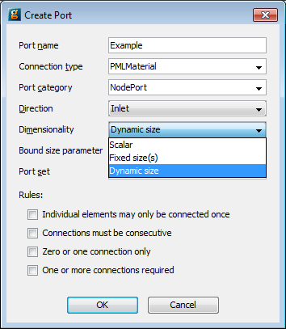
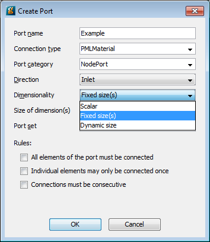

Click on the Add button to define a new Port, or click the Edit button to modify an existing Port. This will activate a Create Port (or Edit Port) dialog box:
If the Connection Type enforces connectivity rules a Port category must be provided; select this from the drop-down menu.
The category of a Port determines which other Ports a connection may be made to (see also: The Port categories tab and Connectivity rules).
If Scalar is selected, then no further specification is required.
If an Array Port of Fixed size(s) is selected, then under Size of dimension(s) enter the size(s) as either a literal value (e.g. 7) or using an Integer Parameter whose value is provided elsewhere.
If an Array Port of Dynamic size is selected, then select an Integer Parameter from the Model declarations. This Parameter will be set automatically to a value equal to the number of connections made to the Port. If there are no connections made to the port, the Parameter will be set to zero. This will result in an Array of zero length, the benefits of which are discussed in the section on Zero-Length Arrays..
a dynamically sized Array Port may have zero or one connection only;
this field is specifically useful if Zero-Length Arrays are used in a Model; a scalar Port does not have the same effect because its equations and variables are not removed when it is not connected.
 
Rules for dynamically and fixed sized Array Ports
Violations of the connectivity rules result in errors that can only be rectified by resolving them by creating a proper connection.
The locations of Ports on the Model icon are specified directly on the Interface tab. The location of a Port is stored in terms of an X co-ordinate and a Y co-ordinate [0 to 1], with (0,0) being in the top left corner of the icon. To determine the location of the Port:
move the Port to the appropriate place on the icon by dragging it using the mouse;
or enter a co-ordinate: to do this click on the relevant cell and type in the Port number.